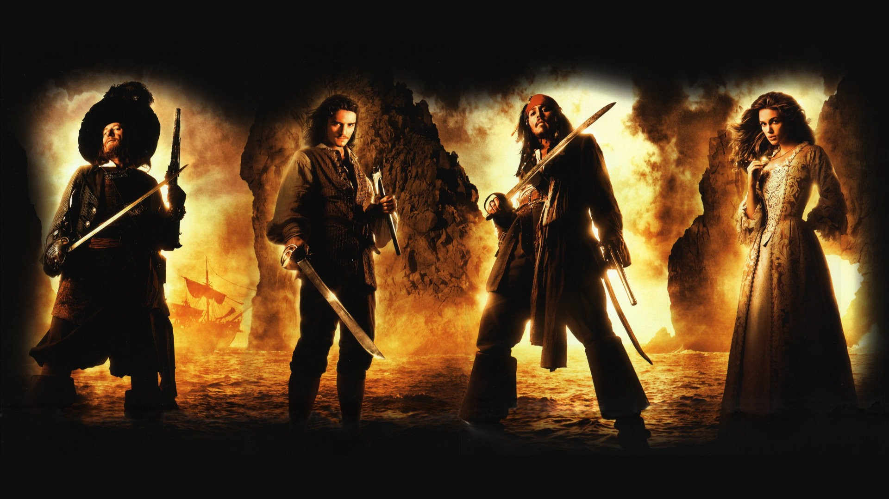
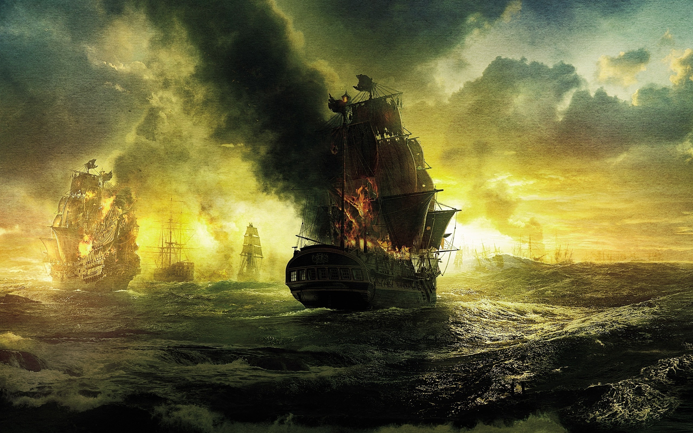

The stories follow the adventures of Captain Jack Sparrow (Johnny Depp), with Hector Barbossa (Geoffrey Rush), Will Turner (Orlando Bloom), Elizabeth Swann (Keira Knightley), and Joshamee Gibbs (Kevin McNally) over the course of the films. Other characters featured in the original trilogy include James Norrington (Jack Davenport), Pintel (Lee Arenberg), Ragetti (Mackenzie Crook), Marty (Martin Klebba), Cotton (David Bailie), Murtogg and Mullroy (Giles New & Angus Barnett), Bootstrap Bill Turner (Stellan Skarsgård), Lord Cutler Beckett (Tom Hollander), Governor Swann (Jonathan Pryce), Tia Dalma (Naomie Harris), and Davy Jones (Bill Nighy).

The film series started in 2003 with Pirates of the Caribbean: The Curse of the Black Pearl, which had a positive reception from audiences and film critics. It grossed $654 million worldwide.[1] After the first film's success, Walt Disney Pictures announced that a film series was in the works. The franchise's second film, subtitled Dead Man's Chest, was released in 2006 and broke financial records worldwide the day of its premiere. Dead Man's Chest became the top-grossing movie of 2006 with almost $1.1 billion at the worldwide box office. The third film in the series, subtitled At World's End, followed in 2007 earning $960 million. Disney released a fourth film, subtitled On Stranger Tides, in 2011 in conventional 2D, Digital 3-D and IMAX 3D. On Stranger Tides succeeded in also grossing more than $1 billion,[1] becoming the second film in the franchise and only the eighth film in history to do this, at the time of release. A fifth film, subtitled Dead Men Tell No Tales, was released in 2017.

The franchise has grossed over $4.5 billion worldwide;[1] it is the 16th-highest-grossing film series of all time, and is the first film franchise to produce two or more movies that grossed over $1 billion.